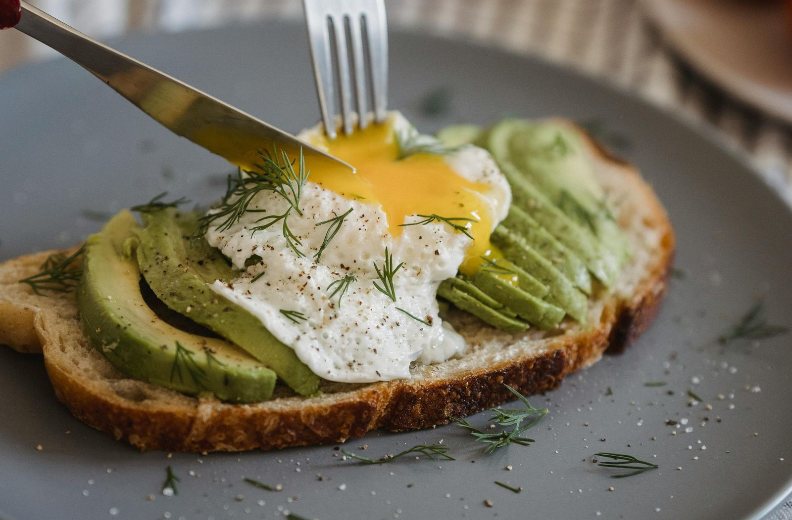
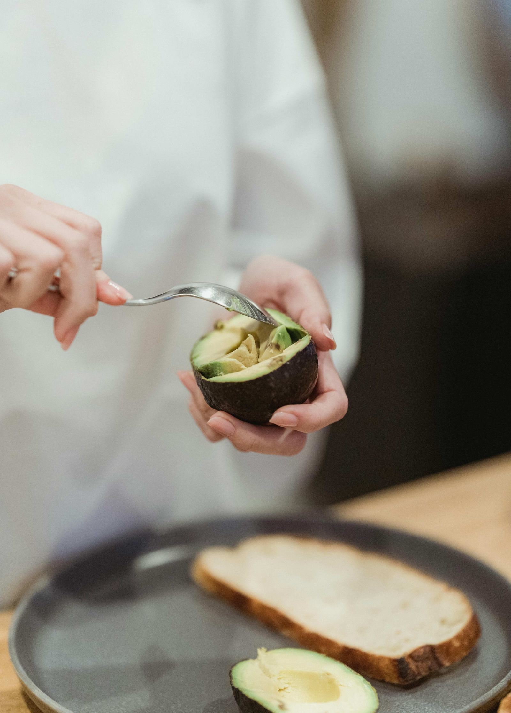

Picture the average morning. You wake up, barely conscious, and the first coherent thought you have is about coffee. You get ready in a blur, maybe grab your bag, lock the door — and arrive at your desk with a hot cup in hand and nothing else in your stomach. Sound familiar?
Most of us don't think much about breakfast. We think of it as optional, as something we'll get to when there's time, as a habit that belongs to people who have their lives more together than we do. But here's what we're actually doing when we skip it or eat the wrong thing: we're asking our brains to perform on empty.
Research consistently shows that what we eat in the morning has a direct impact on how clearly we think, how long we focus, and how steady our energy is throughout the day. After a night of rest, your body hasn't been fuelled for up to ten hours. Breakfast isn't optional — it's the first act of taking care of yourself, before anyone else gets a piece of your day.

What you put on your plate before 9am quietly shapes everything that comes after.
The Three Morning Scenarios
Not all mornings are created equal — and neither are all breakfasts. Here's what's actually happening inside your body depending on how you start the day.
Caffeine is a beautiful thing — but it works best when it has something to work alongside. On an empty stomach, it suppresses appetite just enough to keep you from noticing your hunger, while simultaneously slowing your metabolism and spiking your stress hormones. Some people also notice a racing, pounding heart from the combination of low blood sugar and caffeine's effect on the cardiovascular system. You feel alert — but you're running on borrowed energy, and by mid-morning, the crash is quiet and cruel.
If your morning involves boxes, wrappers, or things labelled "low-fat" and "fortified," you're likely eating what nutritionists call a Western-style breakfast — high in refined sugar, saturated fat, and salt, even when it doesn't taste like it. The "low-fat" label is one of the more misleading ones out there: what's removed in fat is almost always replaced in sugar. Diets built heavily on processed food are consistently linked to lower learning ability and poorer memory. Your brain is only as sharp as the fuel you give it.
This is the version that changes things. A balanced breakfast doesn't need to be elaborate — the formula is simple: pair complex carbohydrates with quality protein. The carbs give your body the immediate energy it needs to get going and your brain the glucose it runs on. The protein slows digestion, keeps you satiated, and gives you staying power well into the afternoon. Together, they create a foundation for focus, mood stability, and genuine energy — not the borrowed kind.
Breakfast is the first decision you make for yourself each morning. And like all first decisions, it sets the tone for everything that follows.
Five Breakfasts Worth Waking Up For
None of these take more than ten minutes. All of them are genuinely good. Think of them less as recipes and more as a permission slip to eat something beautiful before the day begins.
- Soft-boiled eggs with steamed greens — season simply with olive oil, salt, and a crack of pepper. Add a slice of whole-wheat toast if you need a little more staying power. Protein, iron, and fibre in one quiet bowl.
- Avocado toast with a poached egg — the one that became a cliché for a reason. Healthy fats from the avocado, protein from the egg, and slow-release energy from the bread. A squeeze of lemon and a pinch of chilli flakes and it feels like something you'd order at a café you love.
- Fresh tomato, chickpea, and avocado salad with a pan-fried egg — for the mornings when you want something savoury and substantial. Chickpeas bring fibre and plant protein; the avocado brings healthy fat; the egg ties it together. More satisfying than it sounds at 7am.
- Fresh fruit with granola and yogurt — layer it in a bowl, eat it slowly, and let it feel like a small act of pleasure. Choose a plain, full-fat yogurt for the most nutritional value, and a granola low in added sugar. The fruit brings natural sweetness and antioxidants. Your brain will thank you.
- Warm oat porridge with banana and nuts — the most comforting of all the options, and one of the most powerful. Oats release energy slowly, bananas add natural sweetness and potassium, and a handful of nuts brings protein and healthy fats. It's the breakfast that keeps giving long after you've left the table.

Simple ingredients. Real fuel. The kind of morning that actually sets you up.
A Small Experiment Worth Trying
Tomorrow morning, try one of those breakfasts. Not as a diet, not as a new regimen — just as a gentle experiment. Notice how you feel at 10am. Notice if the mid-morning fog doesn't arrive the way it usually does. Notice if your thoughts feel a little cleaner, your patience a little longer.
Keep a small note — even a single sentence on your phone — about how different mornings feel. After a week of eating intentionally, the difference becomes hard to ignore.
Your body is telling you what it needs all the time. Most of us just aren't in the habit of listening before the coffee. But what if breakfast was the simplest, most accessible way to take care of yourself — before the day has a chance to take over?
Your morning belongs to you first.
Before the emails, the commute, the tasks that will ask everything of you — there is one quiet window that's entirely yours. How you fill it matters. Eat something real. Take care of your body. And notice what changes. ✦